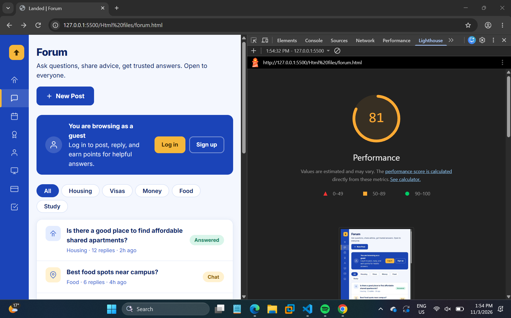
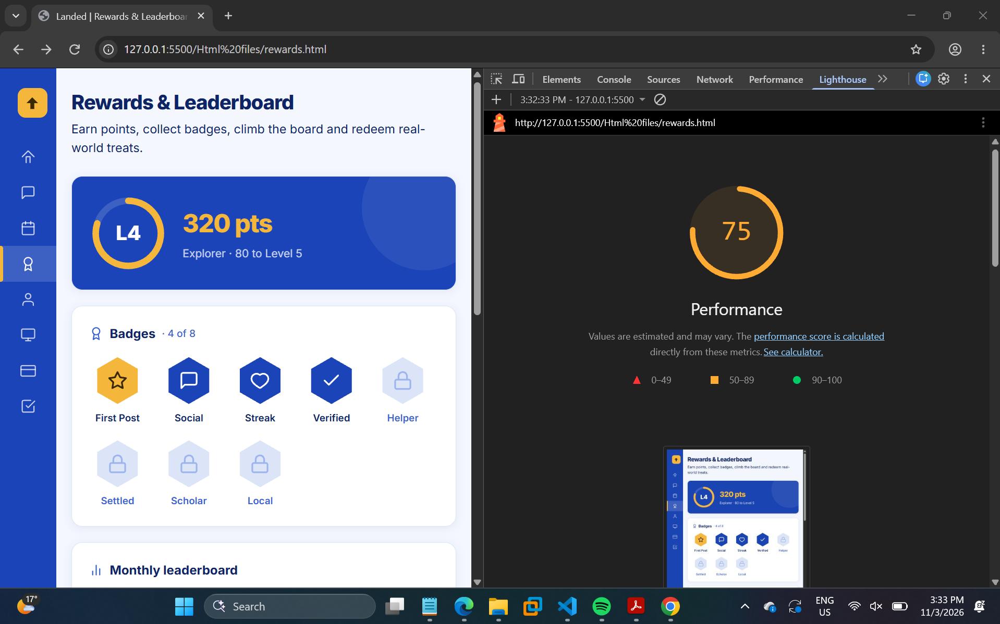
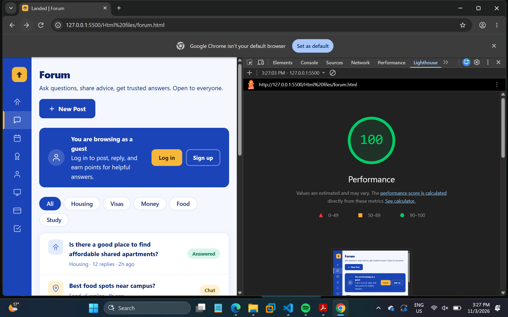
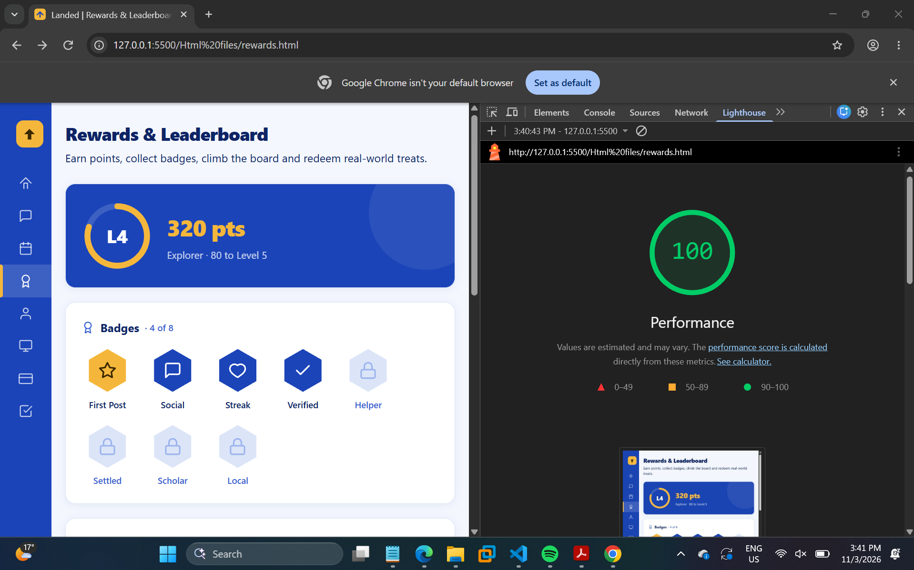

Target 80+: both pages now 100
forum.html
rewards.html
Initial score and metric breakdown
Forum scored 81 and Rewards scored 75. Both pages already painted quickly: four of the five metrics were green. The only failing metric was Cumulative Layout Shift (CLS), which makes up 25% of the performance score.
| Metric | Forum | Rewards |
|---|---|---|
| First Contentful Paint | 0.6 s | 0.6 s |
| Largest Contentful Paint | 0.6 s | 0.6 s |
| Total Blocking Time | 0 ms | 0 ms |
| Speed Index | 0.6 s | 0.6 s |
| Cumulative Layout Shift | 0.398 | 1.000 |


The 5 biggest issues
In Lighthouse 13, the old "Opportunities" list appears as Insights and Diagnostics. Both pages reported the same five problems:
| # | Lighthouse issue | Forum | Rewards | What Lighthouse showed |
|---|---|---|---|---|
| 1 | Layout shift culprits | 0.398 | 1.000 | div.forum-layout / body shifted; culprit: Inter web font (.woff2 from fonts.gstatic.com) |
| 2 | Render-blocking requests | 300 ms | 340 ms | app.css (45.3 KiB) and the Google Fonts CSS block the first paint |
| 3 | Network dependency tree | 4 levels | 4 levels | HTML → app.css → @import font CSS → .woff2; "no origins were preconnected" |
| 4 | Reduce unused CSS | 36 KiB | 36 KiB | 36.1 KiB of the 45.0 KiB app.css is never used on the page |
| 5 | Minify CSS | 10 KiB | 10 KiB | app.css is served with comments and whitespace |
Lighthouse also reported "Document request latency: no compression applied". Compression (gzip/Brotli) is a server setting that VS Code Live Server doesn't support, so I couldn't fix it in our code. Real hosts such as GitHub Pages or Netlify turn it on automatically.
How the font and stylesheet were loaded
All five issues came from two lines. Every page links our shared app.css, and line 7 of app.css imports the Inter font from Google Fonts with display=swap:
<link rel="stylesheet" href="../Css/app.css">
/* app.css, line 7 */
@import url('https://fonts.googleapis.com/css2?family=Inter:wght@400;500;600;700;800&display=swap');
Why it matters: the browser can't draw anything until it has downloaded app.css, and only then does it discover the @import and start fetching the font. With display=swap, the text is drawn first in Segoe UI and then redrawn when Inter arrives. Inter is wider, so lines rewrap and the whole layout jumps. On a phone this is the moment a user goes to tap "Log in" and the button moves.
Each page uses only about 20% of app.css, because the file holds the styles for all nine pages of the app.
The five changes
| # | Change | Fixes issue | Before | After |
|---|---|---|---|---|
| 1 | Font display=swap → display=optional | 1 Layout shift | CLS 0.398 / 1.000 | CLS 0 |
| 2 | Font CSS loaded from HTML without blocking, instead of @import | 2 Render-blocking, 3 Dependency tree | Blocks paint | Non-blocking |
| 3 | preconnect to the font servers | 3 Dependency tree | No preconnect | 2 origins |
| 4 | Remove unused CSS with PurgeCSS | 4 Unused CSS | 45,960 bytes | 14,323 / 14,182 bytes |
| 5 | Minify with clean-css and inline in <style> | 5 Minify CSS, 2 Render-blocking | 1 CSS request | 8,242 / 8,096 bytes inline |
Where I made the change: only in the <head> of forum.html and rewards.html. app.css is not edited, because teammates' pages (index.html, profile.html, events.html and others) still link it. The accessibility fixes from Session 1 are kept in their own <style> block after the inlined CSS, so they still apply.
Load the Inter font without shifting or blocking
Change 1: display=swap → display=optional
With optional, the browser waits only about 100 ms for Inter. If it hasn't arrived, the page keeps the fallback font for that visit and never swaps, so the text is laid out once and nothing moves. By the next page load Inter is cached and is used.
Before (app.css)
@import url('https://fonts.googleapis.com/
css2?family=Inter:wght@400;500;600;700;800
&display=swap');After (page <head>)
<link rel="stylesheet"
href="https://fonts.googleapis.com/
css2?family=Inter:wght@400;500;600;700;800
&display=optional" …>Change 2: Load the font CSS from the HTML, without blocking
Moving the font link from the @import into the HTML lets the browser find it straight away instead of after app.css. media="print" makes the browser download it at low priority without blocking the first paint, and onload switches it to all once it's ready. The <noscript> copy keeps the font working if JavaScript is off.
Before
/* inside app.css, found only after
app.css has fully downloaded */
@import url('…Inter…&display=swap');After
<link rel="stylesheet"
href="…Inter…&display=optional"
media="print" onload="this.media='all'">
<noscript>
<link rel="stylesheet"
href="…Inter…&display=optional">
</noscript>Change 3: Preconnect to the font servers
The font comes from two other websites: the CSS from fonts.googleapis.com and the font file from fonts.gstatic.com. preconnect opens both connections (DNS, TCP and TLS) while the HTML is still loading, so Inter arrives sooner and is more likely to be used with optional. crossorigin is needed on gstatic because font files are always fetched in CORS mode.
Before
<!-- no resource hints -->
After
<link rel="preconnect" href="https://fonts.googleapis.com"> <link rel="preconnect" href="https://fonts.gstatic.com" crossorigin>
Send only the CSS each page needs
Change 4: Remove unused CSS with PurgeCSS
PurgeCSS reads each page's HTML and keeps only the CSS rules whose selectors appear in it. Classes that JavaScript adds later, like .active on the forum filter tabs, are on a safelist so they aren't removed.
// build.mjs (PurgeCSS 6)
const [result] = await new PurgeCSS().purge({
content: [{ raw: pageHtml, extension: 'html' }], // forum.html or rewards.html
css: [{ raw: appCss }], // app.css without the @import
safelist: ['active', 'open', 'ok'], // classes added by JavaScript
});
Change 5: Minify and inline the CSS
The purged CSS is minified with clean-css, which removes comments and whitespace and merges duplicate rules. At about 8 KB it is small enough to put directly in a <style> block, which removes the last render-blocking request: the page can be drawn as soon as the HTML arrives.
Before
<link rel="stylesheet" href="../Css/app.css"> <!-- 45,960 bytes, blocks rendering -->
After
// build.mjs (clean-css 5)
const min = new CleanCSS({ level: 2 })
.minify(result.css).styles;
<style>:root{--royal:#1B44B8;
--mid-blue-1:#3A63D0;…}.sidebar{…}</style>
<!-- forum 8,242 B · rewards 8,096 B -->Why not WebP, lazy loading, image dimensions or defer? I checked these first, but they don't apply to these pages and Lighthouse didn't flag them. Forum and Rewards have no photos: every icon, badge and the XP ring is inline SVG, so there is nothing to convert, lazy-load or size. Each page has one small inline <script> at the end of <body>, which already runs after the HTML is parsed, and defer only works on external scripts. Instead I fixed the five issues Lighthouse actually reported.
Re-run evidence
I re-ran Lighthouse on both pages with the same settings (Performance, Navigation, Emulated Desktop). Both pages now score 100, well above the target of 80.


| Page | Before | After | Change |
|---|---|---|---|
| Forum | 81 | 100 | +19 |
| Rewards & Leaderboard | 75 | 100 | +25 |
Which change had the most impact, and why?
Change 1, switching the font from display=swap to display=optional, had by far the most impact. It is a one-word change, but it fixed the only metric that was failing.
The breakdown in Step 1 shows why. FCP, LCP, Speed Index and Total Blocking Time were already green on both pages. The only red metric was CLS: 0.398 on Forum and 1.000 on Rewards. CLS is weighted at 25% of the score, and anything above 0.25 counts as "poor", so that single metric was costing Forum about 19 points and Rewards about 25. That matches how much each page improved. Lighthouse's "Layout shift culprits" pointed directly at the Inter .woff2 file, and on Rewards the whole body shifted, which is why it scored lower than Forum.
Trade-off: on a first visit over a slow connection, the page may show Segoe UI instead of Inter. I think that is worth it. A page that doesn't jump under the user's finger matters more than the exact typeface, Inter is used on every later visit once it's cached, and the preconnect in Change 3 makes it more likely to arrive in time.
Changes 2 to 5 mainly made the page paint sooner. They removed both render-blocking stylesheets and cut the CSS from 45 KiB to about 8 KB. Because those metrics were already green on Emulated Desktop, they added fewer points to this score, but they would matter much more on a slow phone connection, and they cleared the remaining Insights and Diagnostics warnings.
What I learned: start with whichever metric is red, and follow Lighthouse's own culprit list. The suggested checklist (WebP, lazy loading, defer) would not have changed anything on these pages. The real problem was one setting in a font URL.
How I verified the changes
- Re-ran Lighthouse in Chrome DevTools on both pages with the same settings: Performance 100 on each.
- Compared screenshots of the old and new pages at desktop, tablet (700 px) and phone (400 px) widths: they look identical, so removing unused CSS didn't drop any styles the page needs.
- Checked that the JavaScript still works: the Forum category tabs still filter posts, and the Rewards "Redeem" buttons still change to "✓ Done".
- Re-ran the Accessibility audit to confirm the Session 1 contrast fixes still apply: both pages still score 100.
- Opened teammates' pages (
index.html,profile.html) to confirm they are unchanged, sinceapp.csswas not edited.